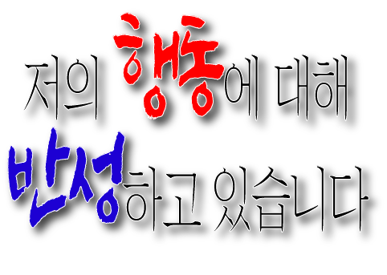

이리와서 앉아봐라 부모님이 그렇게 가르치시디? 너는 그냥 어? 사내자식이 되어가지고 너보다 힘든 사람이 얼마나 많은데 감사한 줄 알아야지 이 말이야. 라떼는 말이야~ 어? 어른이 말하면 그냥 가만~히 앉아서 듣고 있어야지 어디서 말대꾸를 따박따박하고 말이야 어? 어른이 하라면 시키는대로 해! 아 그런 건 난 모르겠고~ 니가 뭘 안다고 지금 어? 요오즘 애들은 말이야 그냥 근성이 없어요, 근성~ 어? 근성이 없어 그러니까 내가 어? 그럴 줄 알았다 그럴 줄 알았어 그렇게 될 줄 알았지. 내가 그 때부터 내가 뭐라도 하면 그냥 안 체 만 체, 본 체 만 체, 그냥 어? 관망만 하고 있더라니~ 허 참 내가 뭐 하고 있으면 어? 와서 “뭐 도와드릴 거 없습니까?” 하고 물어봐야 될 거 아니냐. 그게 설령! 안되는 일이라고 해도! 안되면 되게 해야할 거 아니야! 어린 놈의 쉐키가 어디서 말대답이야? 어? 지금 웃어? 어? 어른이 말씀하시는데 웃어? 너 내가 누군지 알어? 하… 내가 승질 많~이 죽었다 진짜… 어? '아프니까 청춘'인 거야 어? 너 그 말도 모르니? 너 책도 안 읽니? 그거 쬐끔 아프다고 말이야, 어? 징징대고 말이야 너 몇 살이야, 지금? 어? 너 몇 살이야? 어디서 배운 버르장머리야? 어? 몇 살인데, 어? 에휴… 세상 참 좋아졌어 어휴… 내가 말대꾸 하라고 그랬니, 하지 말라고 그랬니? 젊어서 고생은 사서도 한다고 그랬어 근데 어 고생할 생각은 안하고 요령 피울 생각만 하고~ 술이나 한 잔 해! 어른이 주면 그냥 감사합니다~ 하고 받는 거지, 어디서 그냥 빼고 어? 이런 말 해주는 거 이거 나니까 듣는 거지 너 이거 어디가서 들으려면 돈 내고 들어야해~ 어? 아주 그냥 배우자는 정신이 없어, 어? 옛 선조님이 말씀하시길, 어? 진인사대천명이라고 했어 니 할 일을 하고 나서 결과를 바라란 말이야~ 어? 그렇다고 나 요즘 물건 못 믿으니까 하라는 대로 해! 알겠어? 어? 그렇다~ 이 말이야 사람이 칼을 뽑았으면 무라도 베어야할 거 아니냐? 내가 니 나이 때는 말이다~ 이런 건 상상도 할 수 없었다, 이 말이야. 아니 그러니까 내 말은 노오력이 부족해서 니가 이런 거 아니냐 너는 왜 이렇게 애가 융통성이 없어, 융통성이? 내가 진짜 아들 같아서 하는 말인데, 그래 어리면 잘 모르지 그래 그래 니가 아직 몰라서 그러는데, 어른에게 말할 때는 그러는 거 아니다, 어? 나보다 30년은 덜 산 놈이 어? 자꾸 같은 말 하게 하지 말고~ 다 너 잘 되라고 하는 말이야 어? 그래 요즘 남자친구는 있고? 자고로 여자는 스물 다섯 넘어가면 꺾인다 이 말이야 기분 나쁘게 듣지 말고~ 니가 그런다고 변할 줄 알어? 어? 불평불만 하지 말고 라떼는 여자가 고등학교 가는 거 상상도 못했다 이 말이야 아니 뭐 남자는 와인 같아서 나이가 들 수록 숙성되는 거 아니겠어? 거 좀 어 우리네 어머니들처럼 빠릿빠릿하게 못허냐? 아니 어머니들이 워낙 일을 잘해서 나 젊을 땐 거들 수도 없었다 이 말이야~ 내가 안 도운게 아니고 이미 다 해놔서 할 일이 없었대도? 너 혹시 아직도 술담배하냐? 이런... 쯧쯧쯧 엄마될 여자애가 나이가 몇인데 아직도 아기 몸에 안 좋은 습관만 들이고 끊지를 않허고 쯧... 말세야 말세 요오즘 애들은 이래서 문제야 결혼해서 애 낳고 나라에 이바지할 생각부터 해야지 원 자기 좋은 거만 찾아다니고 에휴...